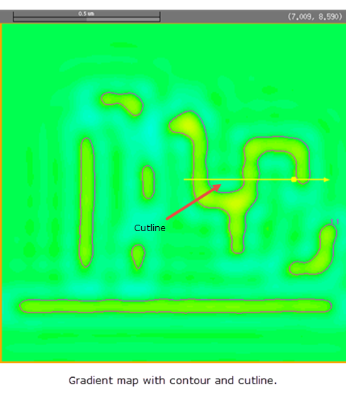
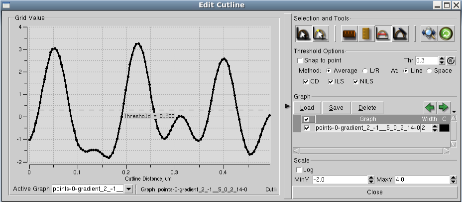

You can draw
cutlines and display resulting aerial intensity plots using Calibre
WORKbench.
Procedure
- Click the map.
The map border turns orange.
- In the Calibre WORKbench icon
bar, choose Cutline.
- Draw a cutline through a feature
on the map by clicking once for the cutline start and once for the
cutline end.
Figure 1. Drawing a Cutline
After clicking the cutline
end, the Cutline Run Options form appears.
- Click OK in
the Cutline Run Options form.
The Edit Cutline form appears
displaying the cutline graph. The graph shows the cutline distance
on the X-axis and the aerial intensity on the Y-axis.
Figure 2. Aerial Intensity Graph
Results
You have drawn
a cutline across the gradient map for a metal layer target.